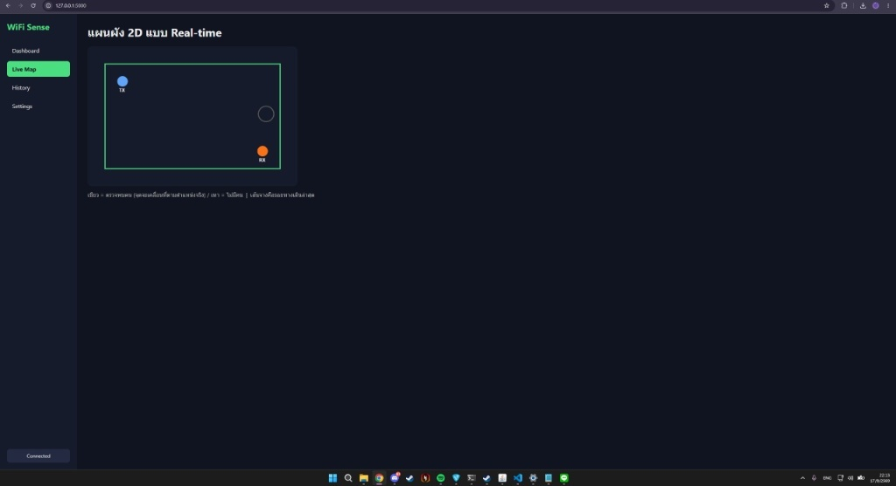
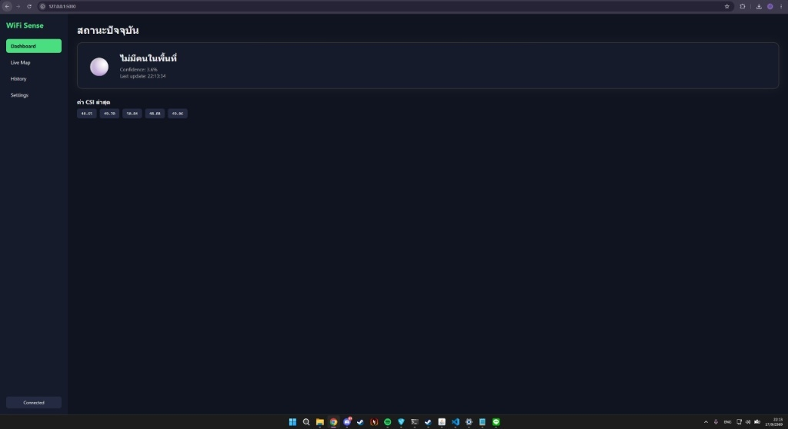
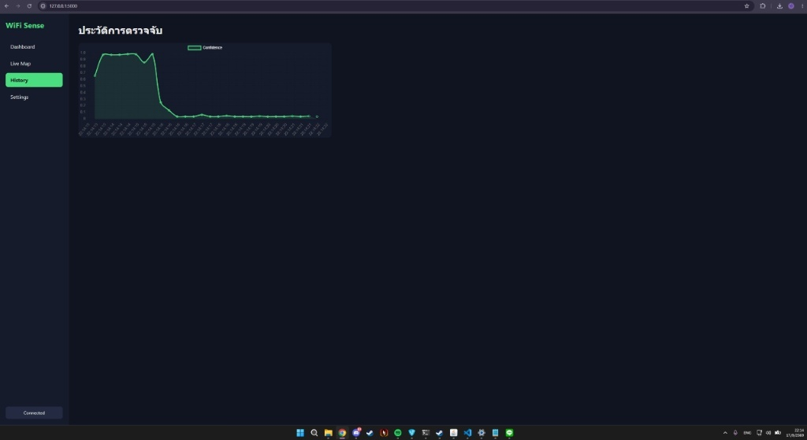

ภาพรวมของโครงงาน
ระบบ WiFi Sense (WiFi Human Detection) เป็นโครงงานวิศวกรรมโทรคมนาคมที่พัฒนาขึ้นเพื่อตรวจจับการปรากฏตัวและตำแหน่งของมนุษย์ภายในพื้นที่ โดยอาศัยการวิเคราะห์ความเปลี่ยนแปลงของข้อมูลสภาพช่องสัญญาณ (CSI: Channel State Information) ของคลื่นความถี่ Wi-Fi ระหว่างตัวส่ง (TX) และตัวรับ (RX) ซึ่งคลื่นสัญญาณจะเกิดการสะท้อน กระเจิง และลดทอนเมื่อมีร่างกายมนุษย์เคลื่อนไหวผ่าน
ข้อดีสำคัญคือการตรวจจับที่รักษาความเป็นส่วนตัวสูงสุด (Privacy-Preserving) ไม่จำเป็นต้องติดตั้งกล้องวงจรปิด สามารถทำงานได้แม้ในที่มืด หรือมีสิ่งกีดขวางบางประเภท
บทบาทหน้าที่ในการพัฒนา
ศรายุธ เภรีทัศน์
รับผิดชอบงานด้านการคำนวณและวิเคราะห์สัญญาณ (Signal Analysis & Math Modeling): การสกัดข้อมูล CSI, การคำนวณทางสถิติเพื่อกรองสัญญาณรบกวน (Noise Filtering), การคำนวณพิกัดตำแหน่ง และการวิเคราะห์ค่าความมั่นใจ (Confidence Score)
ฟังก์ชันการทำงานหลักของระบบ
- Dashboard แสดงสถานะปัจจุบัน: แสดงผลการตรวจจับว่ามีคนในพื้นที่หรือไม่ พร้อมระดับความเชื่อมั่น (Confidence) และค่า CSI ล่าสุดแบบ Real-time
- แผนผัง 2D แบบ Real-time: จำลองตำแหน่งสัมพัทธ์ระหว่างเสาสัญญาณตัวส่ง (TX), ตัวรับ (RX) และพิกัดของผู้ตรวจพบภายในกรอบพื้นที่
- ประวัติการตรวจจับ (History): บันทึกแนวโน้มและวิเคราะห์ค่าความมั่นใจย้อนหลังในรูปแบบกราฟอนุกรมเวลา